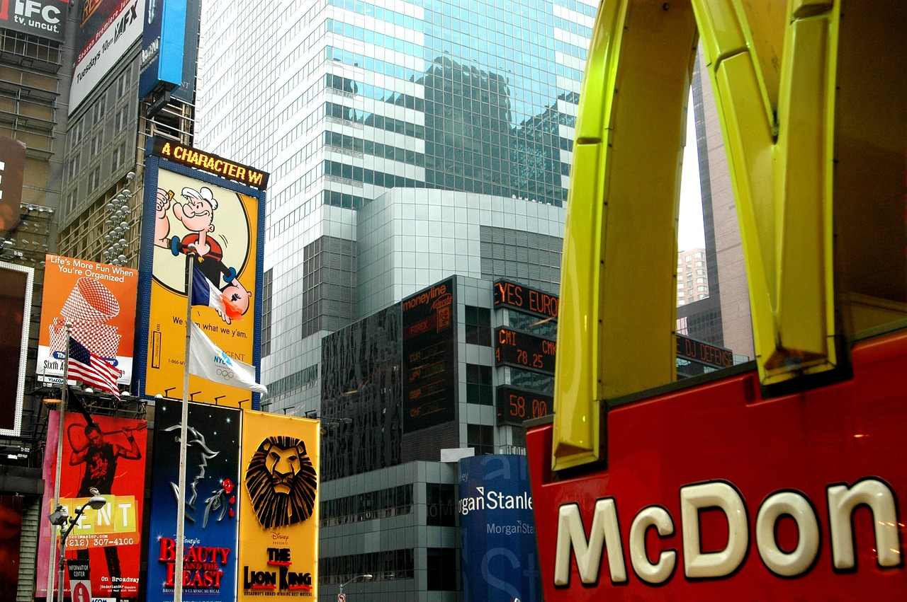
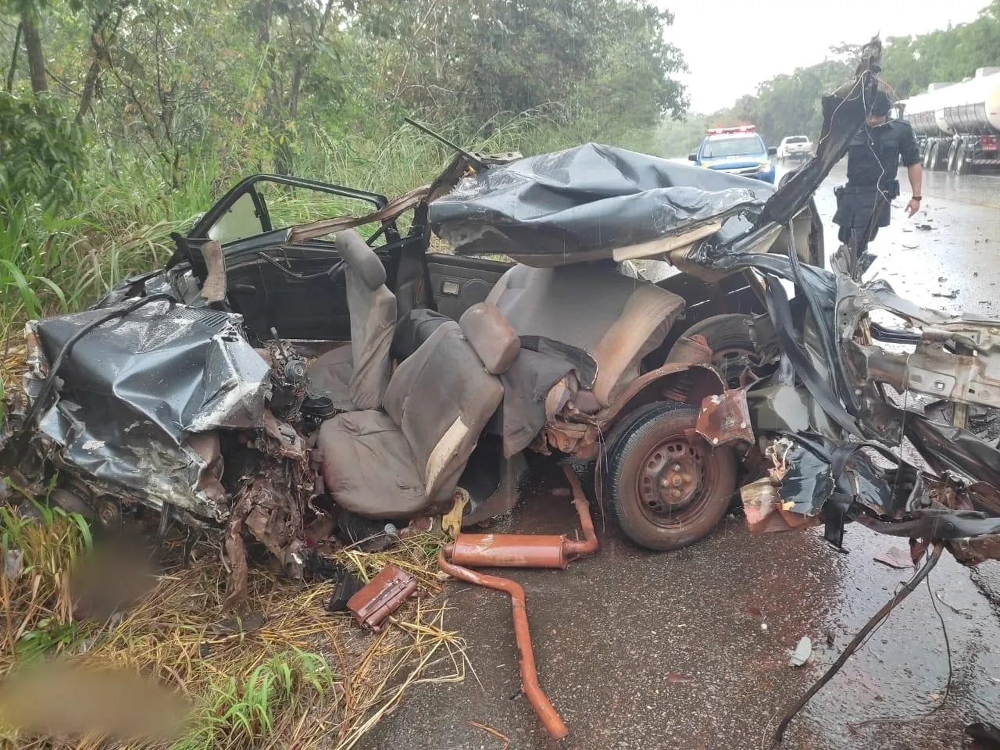

Artigos

As queimadas de florestas são um grave problema ambiental, causando perda de biodiversidade,
emissões de gases de efeito estufa e destruição de habitats naturais.
Medidas de prevenção e combate eficazes são necessárias para enfrentar esse desafio e proteger
nossas florestas.

Os assaltos a mão armada são crimes violentos que causam medo e insegurança na sociedade. Essas
ações envolvem a ameaça ou uso de armas de fogo para roubar pessoas, estabelecimentos comerciais ou
veículos.
A prevenção e o combate a esses crimes exigem ações coordenadas das autoridades de segurança, além
de políticas sociais e econômicas que abordem as causas subjacentes à criminalidade.

As câmeras de segurança são recursos amplamente utilizados em empresas para garantir a segurança e
proteção do ambiente de trabalho. Esses dispositivos permitem a vigilância contínua das áreas
internas e externas, ajudando a prevenir furtos, monitorar o comportamento dos funcionários e
identificar possíveis ameaças.
Além disso, as câmeras de segurança fornecem registros visuais que podem ser usados como evidências
em investigações de incidentes e contribuem para um ambiente mais seguro e protegido para
colaboradores e clientes.

Cada vez mais pessoas estão optando por utilizar bicicletas como meio de transporte preferido. Essa
escolha está relacionada a uma série de benefícios, como a redução do impacto ambiental, a melhoria
da saúde e bem-estar, e a economia de dinheiro em comparação com veículos motorizados.
Além disso, o uso de bicicletas proporciona maior flexibilidade no trânsito urbano, evitando
engarrafamentos e permitindo uma locomoção mais rápida e eficiente.

A queda nos preços dos alimentos é um fenômeno que pode ter diversas causas e impactos
significativos. Fatores como o aumento da produção agrícola, a melhoria das técnicas de cultivo, as
condições climáticas favoráveis e a maior eficiência na cadeia de abastecimento podem contribuir
para essa redução de preços.
Isso beneficia os consumidores, tornando os alimentos mais acessíveis e ajudando a combater a fome e
a pobreza. No entanto, é importante monitorar de perto essas oscilações, pois variações excessivas
podem prejudicar os agricultores e a sustentabilidade do setor alimentar.

As vagas de trabalho home office têm se tornado cada vez mais populares e disponíveis em diversas
áreas profissionais. Esse modelo de trabalho permite que os funcionários desempenhem suas funções
remotamente, geralmente a partir de suas próprias casas. Essa modalidade oferece flexibilidade de
horários, redução de custos com deslocamento e maior conciliação entre vida pessoal e profissional.
Com o avanço da tecnologia e a pandemia de COVID-19, muitas empresas adotaram o home office como uma
alternativa viável, proporcionando oportunidades de emprego mais flexíveis e adaptadas às
necessidades atuais.

O McDonald's é uma das maiores redes de fast food do mundo e tem se envolvido em uma série de ações
e iniciativas. A empresa tem se comprometido com a responsabilidade social e ambiental,
implementando programas de sustentabilidade, como o uso de embalagens ecológicas e o incentivo à
reciclagem.
Além disso, o McDonald's também tem se concentrado em oferecer opções de alimentos mais saudáveis,
como saladas e frutas, e em promover práticas de bem-estar animal em sua cadeia de suprimentos.
Essas ações demonstram o compromisso da empresa em causar um impacto positivo na sociedade e no meio
ambiente.

O abandono de animais é um problema sério que afeta milhões de animais em todo o mundo. Muitas
vezes, os animais são abandonados por motivos como mudanças de vida, falta de responsabilidade dos
tutores ou incapacidade de lidar com as necessidades do animal.
O abandono deixa os animais expostos a perigos, como fome, doenças e maus-tratos, destacando a
importância da conscientização sobre a adoção responsável e a esterilização para controlar a
população de animais de estimação. É fundamental apoiar abrigos e organizações de resgate de
animais, promover a educação e trabalhar para mudar as atitudes em relação aos animais de estimação.

Os acidentes de carro são eventos trágicos que ocorrem com frequência em todo o mundo, resultando em
perda de vidas e danos materiais significativos. Esses acidentes podem ser causados por diversos
fatores, como distração ao volante, excesso de velocidade, condução sob efeito de álcool ou drogas,
condições climáticas adversas e falhas mecânicas.
É essencial promover a conscientização sobre a segurança no trânsito, incluindo a adoção de medidas
como o uso do cinto de segurança, o respeito às leis de trânsito e a utilização de dispositivos de
segurança, como airbags. Além disso, investimentos em infraestrutura e educação continuada são
cruciais para reduzir a incidência de acidentes e proteger vidas.

A escassez de água é um desafio global que afeta milhões de pessoas em várias regiões do mundo. A
falta de água ocorre devido a fatores como mudanças climáticas, aumento da demanda por água devido
ao crescimento populacional e uso inadequado e insustentável dos recursos hídricos.
Essa escassez traz consequências graves, como dificuldade de acesso à água potável, impacto na
agricultura e na segurança alimentar, além de problemas de saúde pública. Para combater a falta de
água, são necessárias medidas de conservação e gestão eficiente dos recursos hídricos, investimentos
em infraestrutura, uso sustentável da água e conscientização sobre a importância desse recurso
vital.